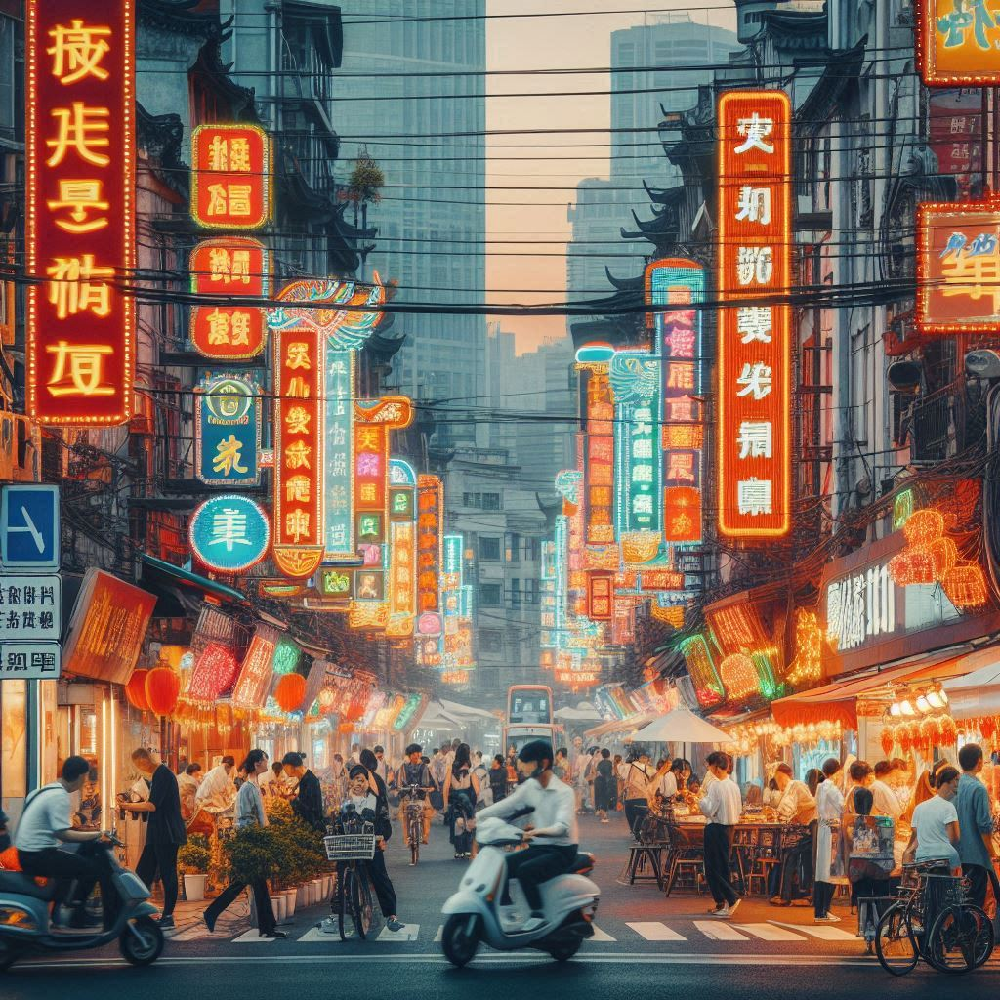
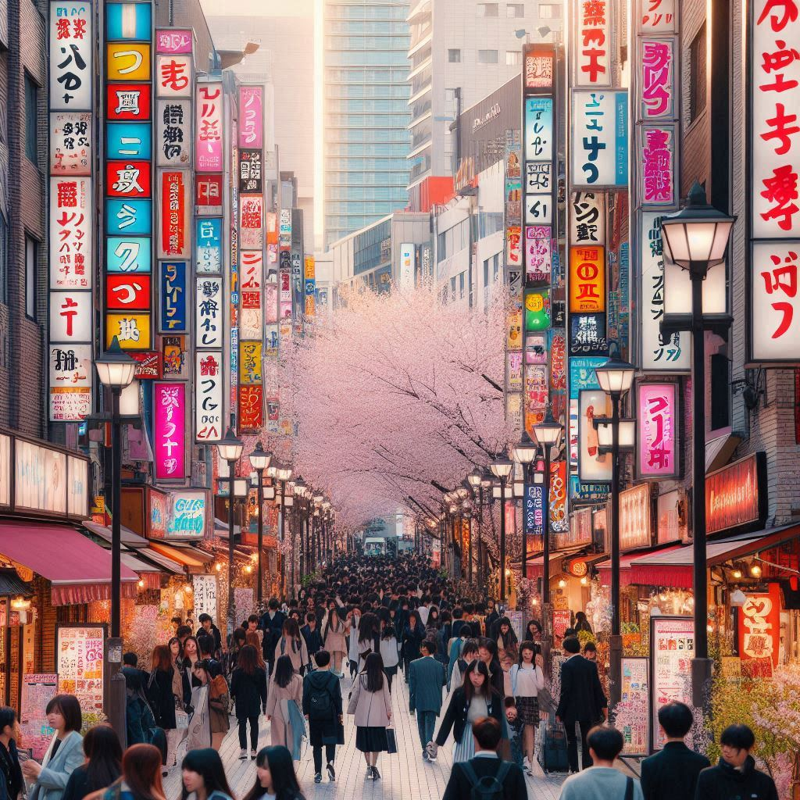
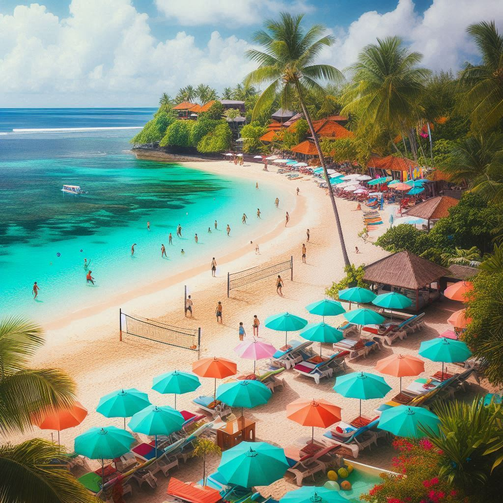
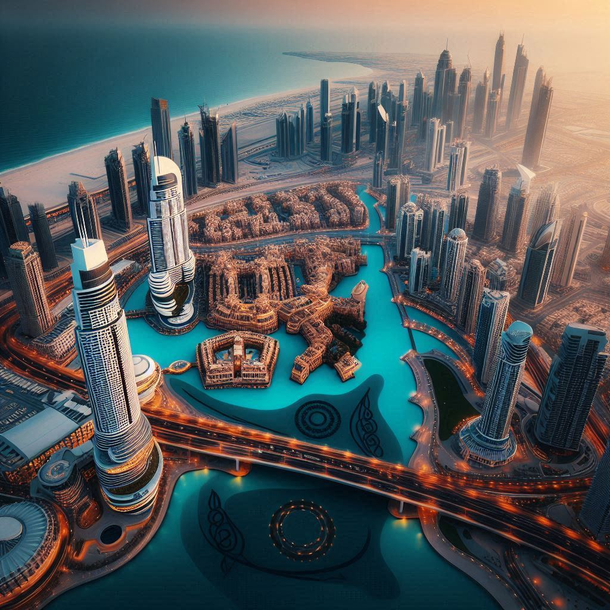
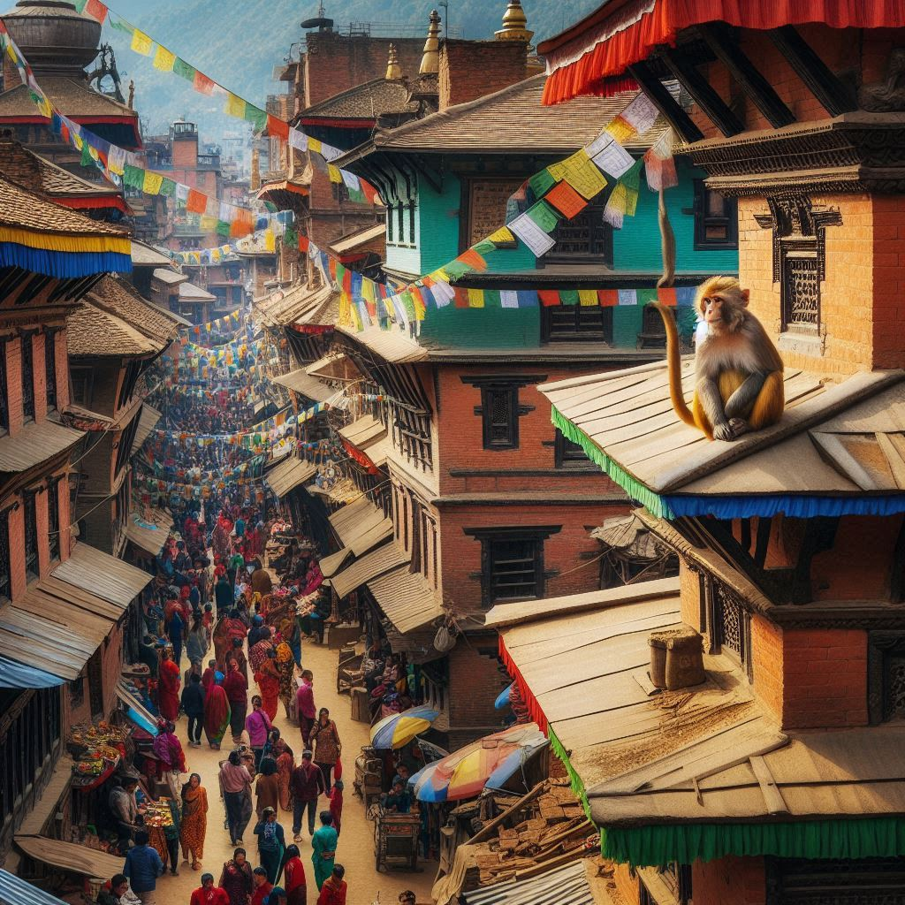
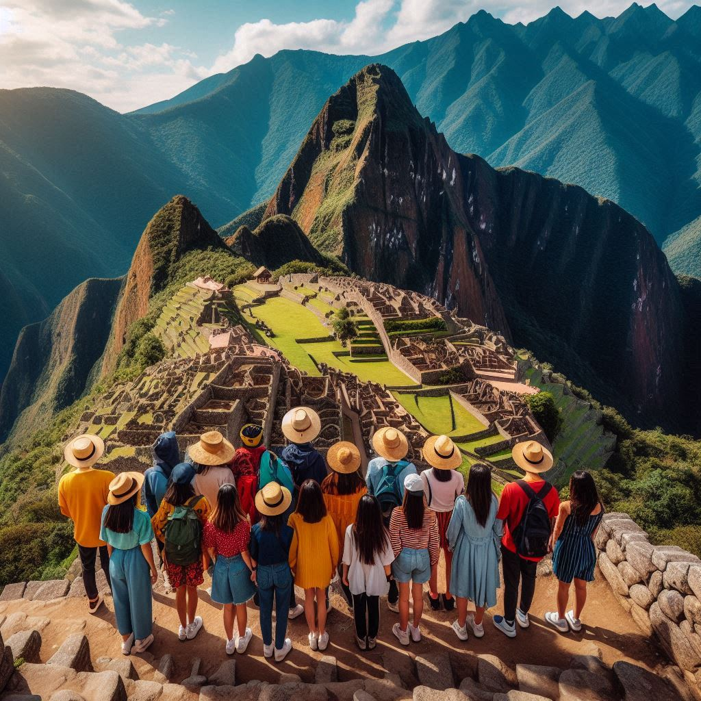

|  |
Shanghái, China Shanghái es una ciudad vibrante que fusiona lo antiguo y lo moderno, con un impresionante skyline, una rica oferta cultural, excelente gastronomía, y una vida nocturna animada, convirtiéndola en un destino dinámico y diverso para todo tipo de viajeros. |
Precio: $500 por 3 noches |
|  |
Tokyo, Japón Japón ofrece una mezcla única de tradición y modernidad, con templos, jardines zen, ciudades futuristas como Tokio y paisajes naturales impresionantes. Su deliciosa gastronomía, como sushi y ramen, y su hospitalidad lo convierten en un destino fascinante y accesible. |
Precio: $600 por 4 noches |
|  |
Bali, Indonesia Bali, en Indonesia, es un paraíso que destaca por sus playas de arena blanca, selvas verdes, templos antiguos y senderismo. Puedes explorar la isla en moto, visitar el templo Tanah Lot al atardecer, recorrer los arrozales de Jatiluwih y Tegalalang, disfrutar de playas, lagos y volcanes, e incluso casarte. |
Precio: $350 por 3 noches |
|  |
Dubái, Emiratos Árabes Unidos Dubái, una ciudad moderna levantada en el desierto, es famosa por sus rascacielos icónicos como el Burj Khalifa y el lujoso Burj Al Arab. A pesar de su lujo, mantiene tradiciones como los abras en el Creek y los zocos. Para conocer su historia, se recomienda visitar el Centro para el Entendimiento Cultural Jeque Mohammed. |
Precio: $750 por 5 noches |
 |
Gran Caimán, Islas Caimán Gran Caimán, atrae cruceros por sus tiendas libres de impuestos en George Town. Fuera del bullicio, puedes visitar Stingray City para nadar con mantas raya o hacer snorkel en la barrera de coral. También es recomendable la Granja de Tortugas, ideal para todas las edades. |
Precio: $400 por 3 noches |
|  |
Katmandú, Nepal Katmandú, la capital de Nepal, es una ciudad llena de misticismo, con un tráfico caótico y un ambiente vibrante en el barrio de Thamel, donde la amabilidad del pueblo nepalí brilla. Rodeada por 8 de los 14 ochomiles del mundo, es tierra de leyendas y aventuras, siendo la más famosa la del Yeti, invitando a los aventureros a explorar este fascinante destino. |
Precio: $300 por 3 noches |
|  |
Cuzco, Perú Cuzco, la "capital histórica" de Perú, es el acceso a los misterios incas, con excursiones al Valle Sagrado y al Camino Inca hacia Machu Picchu. Su Mercado de San Pedro ofrece una inmersión en la vida local, mientras que su rica historia te invita a descubrir el legado inca. |
Precio: $500 por 3 noches |